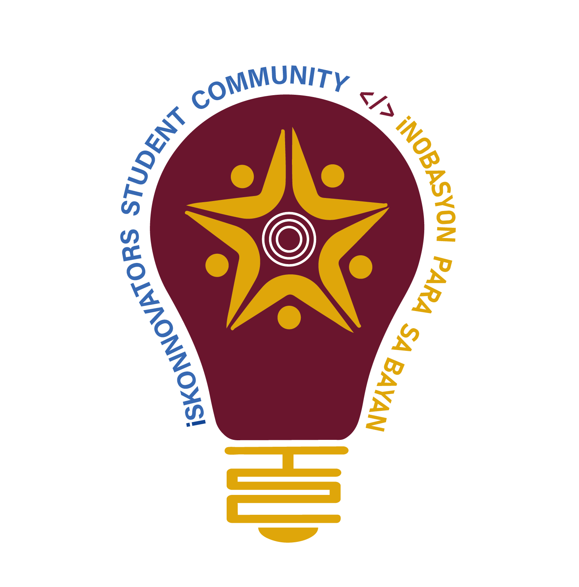
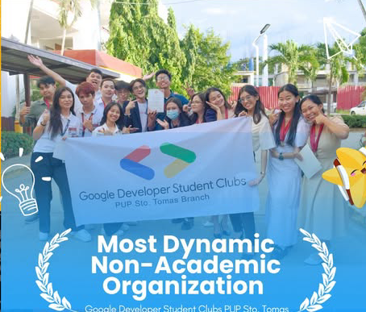
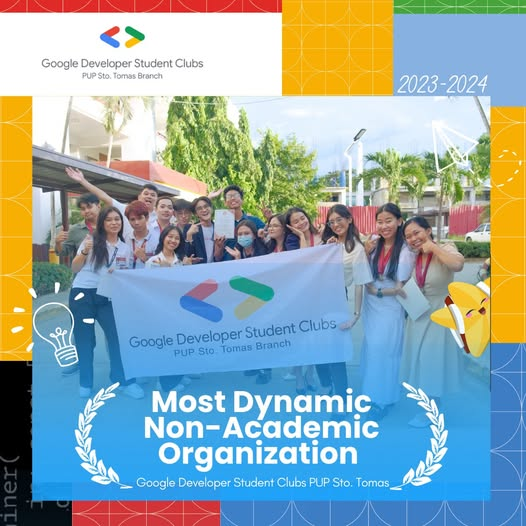

Iskonnovators Student
Community PUPSTC

Community of
PUPian Innovators
We build crazy things for society!
About ISC
Iskonnovators Student Community (ISC) is the interdisciplinary community of student innovators
within PUP Sto. Tomas. Our goal is to hone our members to create tech projects that blossom into
entries for tech competitions or student-led start ups.
We celebrate the joy and art of building tech projects and we serve as the community for young
passionate minds to flourish. Our mission is to foster a culture of innovation in our school.

Lacus condimentum tincidunt tellus eu. Vitae leo pretium et nulla. Ut dolor amet nulla nulla ac libero tempor tincidunt commodo. Ipsum in molestie amet odio.